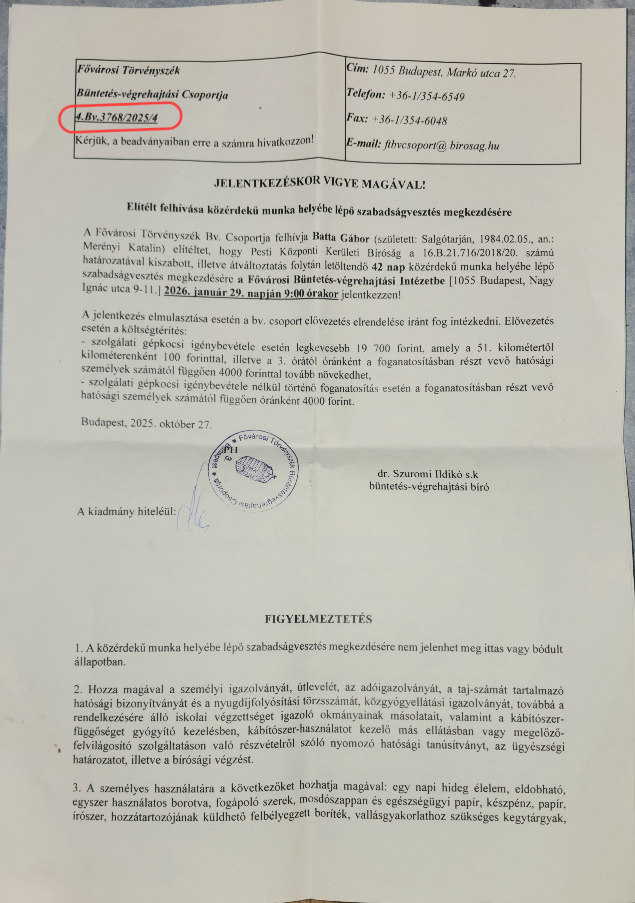
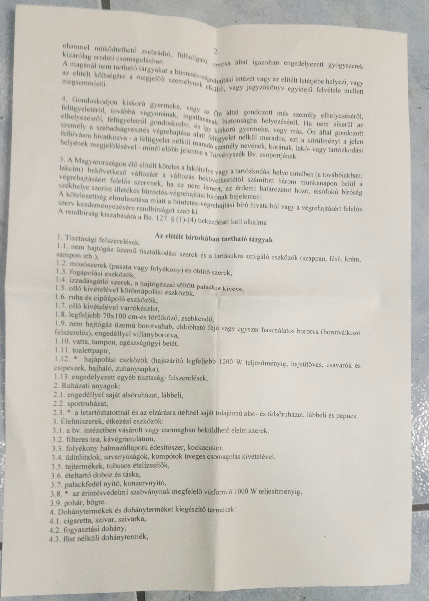
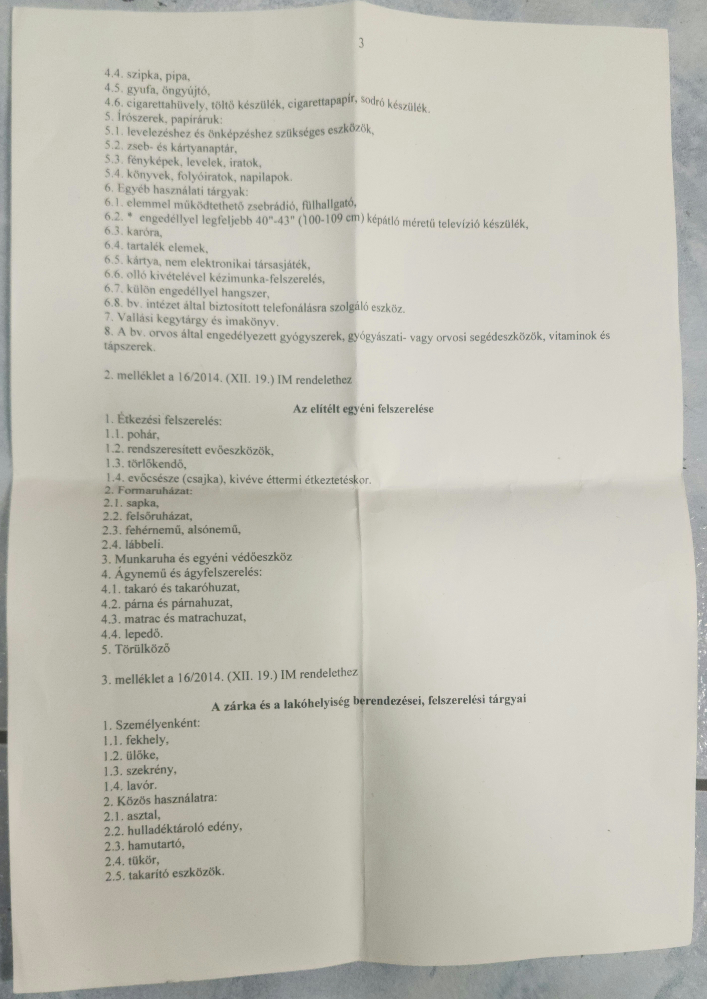

Brutális támadás áldozatát 6 évig figyelmen kívül hagyta a francia rendőrség — most börtön fenyegeti
2019 augusztusában Batta Gábort három ismeretlen elkövető brutálisan megtámadta Strasbourg Parc de la Citadelle parkjában. Súlyos arccsonttöréseket szenvedett.
Violent attack victim ignored by French police for 6 years — now facing imprisonment
In August 2019, Gabor Batta was brutally attacked in Strasbourg's Parc de la Citadelle.

CT felvételekCT Scans


Arc CT scan – Implantátum (kórházi hiteles) Facial CT Scan – Implant (Hospital Authenticated)

Orvosi találkozó elmaradt – Utókezelés ügyében Missed Medical Appointments – Aftercare Issues
Az utókezelés során elmaradt orvosi találkozók dokumentumai. Egyik az előzetes konzultáció, másik az arcimplantátum kezelés előkészítése. Mindkettő bizonyítja a szükséges kontrollvizsgálatok hiányát.
Documents about missed medical follow-ups in aftercare. One is the preliminary consultation, the other is the preparation for facial implant treatment. Both prove the lack of necessary control examinations.


Gyanúsítottak fantomképeiSuspect Composites


Börtönbe vonulási határozatImprisonment Order
PKKB 16.B.21.716/2018 – 42 napos szabadságvesztés. Határidő: 2026. április 29.



Garázdaságos ügy dokumentumaiGarázdaság Documents


Permegújítási kérelem – Felfegyverkezett garázdaság Request for Retrial – Armed Public Nuisance
Permegújítási kérelem, amelyből kiderül, hogy az alap garázdaságos ügy felfegyverkezve elkövetett garázdaságnak is számít.
Request for retrial, which shows that the original garázdaság case also qualifies as armed public nuisance.


Kegyelmi eljárás – Igazságügyi Minisztérium Presidential Pardon – Ministry of Justice
Kegyelmi kérelem (VII-LK/206/2/2026) – 4 oldal.
Pardon application documents (VII-LK/206/2/2026) – 4 pages.


Emberi Jogi Biztos dokumentumai Hungarian Ombudsman Documents
Panasz az Alapvető Jogok Biztosához (RI-AJB-106/2026) – 2 oldal.
Complaint to the Commissioner for Fundamental Rights (RI-AJB-106/2026) – 2 pages.


Magyar Ügyészség értesítése a hármas támadó ügyben Hungarian Prosecutor's Office Notification – Triple Attacker Case
A magyar ügyészség értesítése a strasbourgi támadás ügyében. A dokumentumot elküldték Franciaországba, de 10 nap után visszaküldték, és nem iktatták le a bíróságon.
Notification from the Hungarian Prosecutor's Office regarding the Strasbourg triple attack. The document was sent to France, returned after 10 days and was not registered by the court.

EJEB Rule 39 – Sürgős intézkedésECHR Rule 39 – Urgent Measures